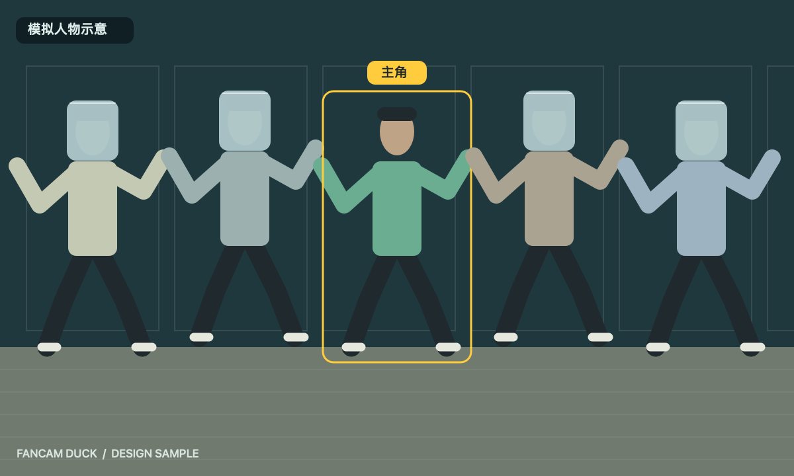
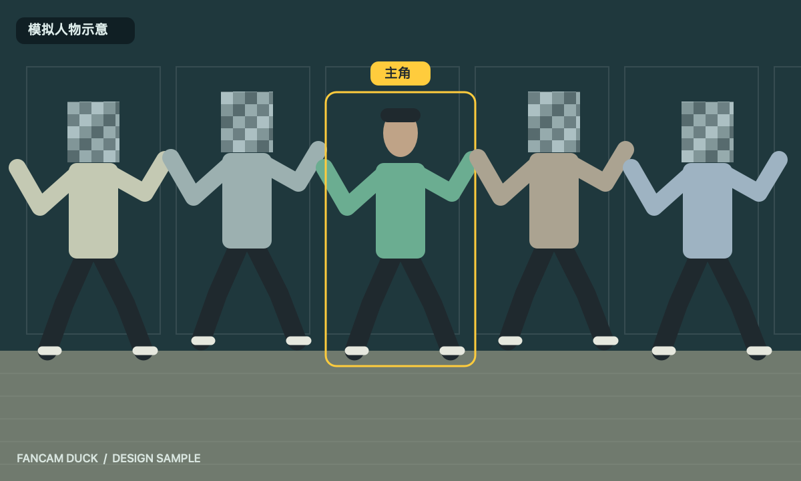
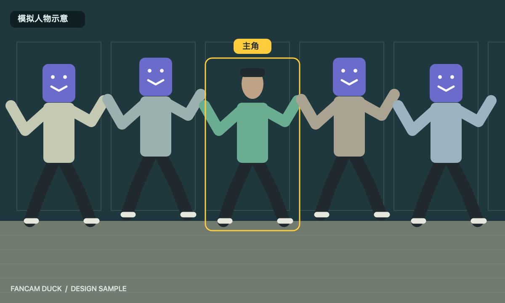
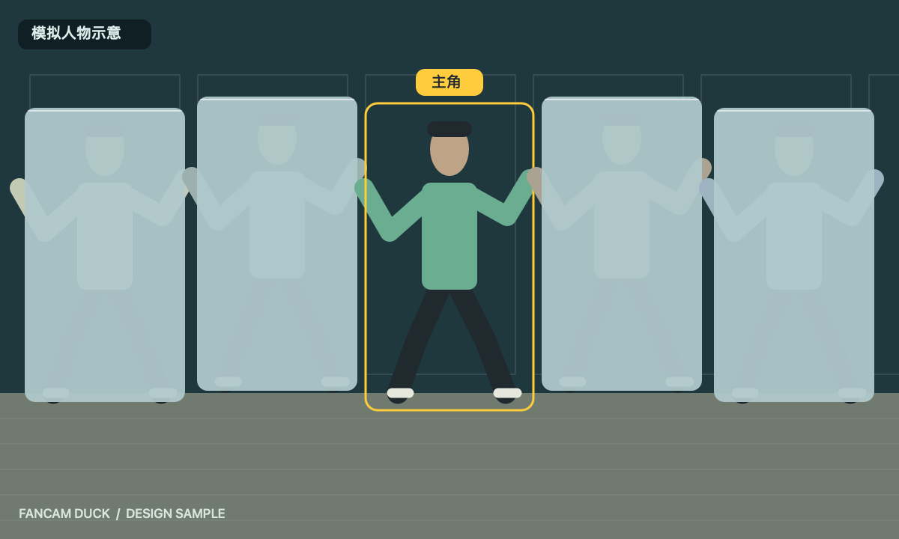
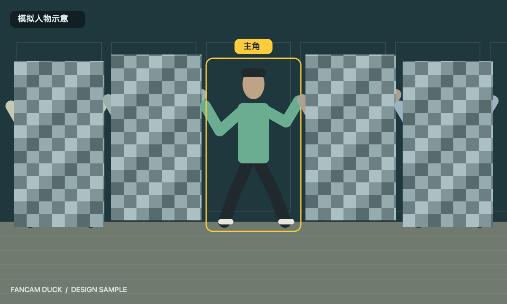
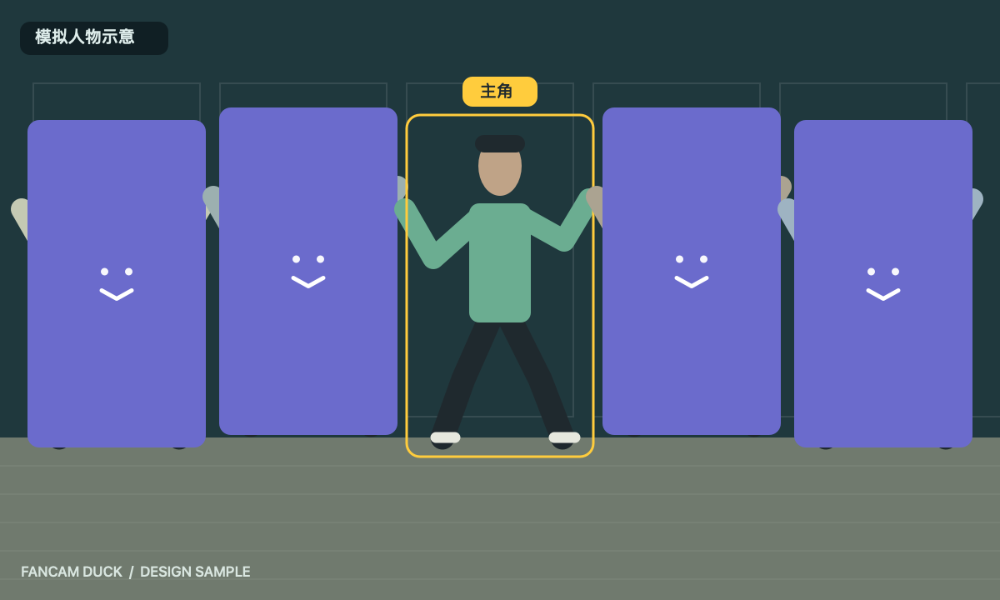

打码 · 模拟图片示意
使用几何绘制的模拟舞者展示人脸与整人遮挡。主角保持清晰，其余人物统一应用一种样式；三种样式为独立静态示意，不会同时生效。
图片示例没有额外黑色底板或阴影。以下图片用于解释产品效果，不代表实际滤镜输出或跟踪精度。
原片构图对照 人脸 · 毛玻璃
人脸 · 毛玻璃
人脸 · 马赛克
人脸 · 图片
全身 · 毛玻璃
全身 · 马赛克
全身 · 图片
此处展示模拟人物静态效果图。历史性能记录仍对应原测试，不能从这些静态示意图判断处理速度或时序平滑度。
返回完整界面截图 · 性能记录 · 最终测试摘要